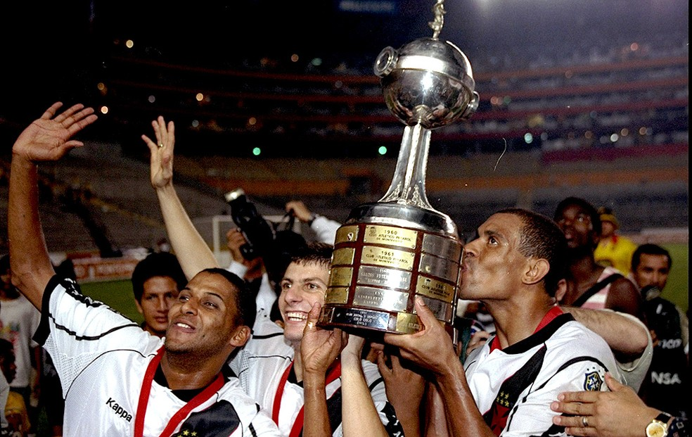

Quando foi fundado?
O Vasco foi fundado como um clube de remo em 1898, por um grupo de 63 rapazes, imigrantes portugueses e luso-descendentes, reunidos no bairro da Saúde. O nome escolhido foi Club de Regatas Vasco da Gama, pois naquele ano eram comemorados os 400 anos da viagem do célebre almirante à Índia.
Qual foi o título mais marcante da história?
Já se passaram 23 anos do maior título da história do Vasco da Gama, a Taça Libertadores de 1998. No dia 26 de agosto daquele ano, o Cruzmaltino venceu o Barcelona de Guayaquil por 2 a 1 e levantou a taça pela primeira e única vez.
Foi uma época de grandes glórias para a equipe de São Januário, que chegou ao torneio após se sagrar campeã brasileira de 1997
.

Para mais informações sobre o gigante da colina basta clicar aqui